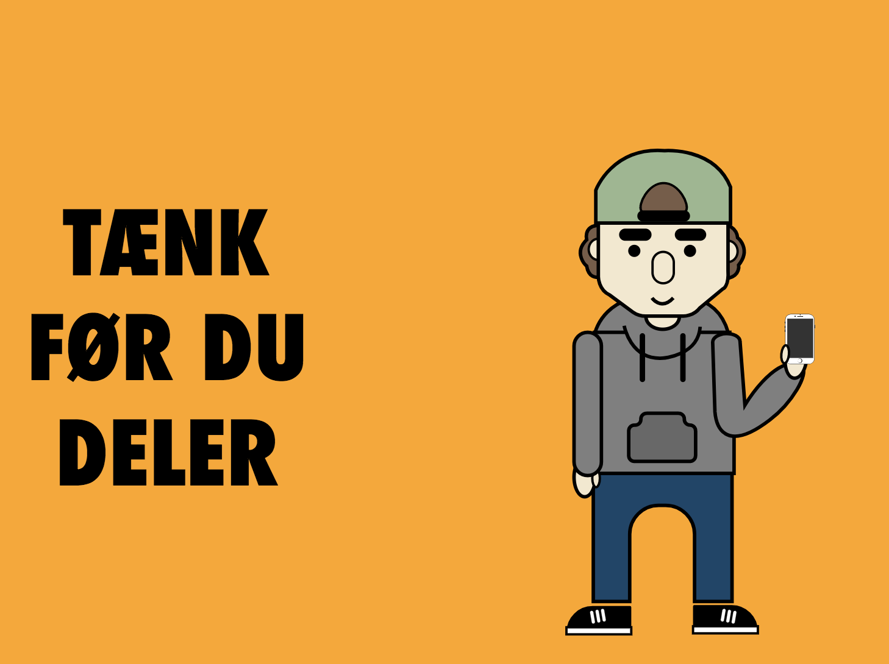

CONTACT
- Phone: (+45) 20 77 88 72
- Email: vh.11@hotmail.com
SOCIAL MEDIA


I vores anden opgave i forløbet "Grundlæggende Animation", havde vi fået Sex og Samfund som kunde. Vores opgave lød på at lave en interaktiv animation der kunne fungere som annonce til deres kampagne "PrivatSnak". Animation skulle, ligesom kampagnen, lægge fokus på deling af billeder uden samtykke, og henvende sig til målgruppen 13-15 år.
Under gruppearbejdet var min primære opgave at stå for designet af animationen. Efter at have søgt inspiration fra nettet, begyndte jeg at skitserer vores karakterer hvorefter jeg rentegnede dem i Adobe Illustrator. Derudover var min opgave også at udvikle spritesheets så vi kunne få vores karakterer til at bevæge sig via. HTML, CSS og Javascript.
Vores gruppe bestående af Nikolaj, Theis og jeg besluttede at vores animation skulle handle om en dreng (i alderen 12-15 år) der skal foretage et valg; Han modtager et billede af en pige, potentiel hævnporno, og han (brugeren) har derefter mulighed for at lade billedet være eller sende det videre. Hvis han lader vær og sletter billedet modtager han jubel og ros. Hvis han sender det videre får det derimod fatale konsekvenser for ham selv og hans veninde. Begge historier ender med budskabet om at man altid kan kontakte Privatsnak hvis man står, eller har stået, i en lignende situation. Der inddrages elementer fra skræmmekampagner, på baggrund af det emne vi arbejder med. Det skal tages seriøst og derfor er man nødt til at vise konsekvenser bag dumme beslutninger. Dette gøres dog samtidig med at vi anvender humor, som letter tonen for animationen, og gør den mere tiltagende overfor vores målgruppe.
Se vores procesdokument med den færdige animation her.